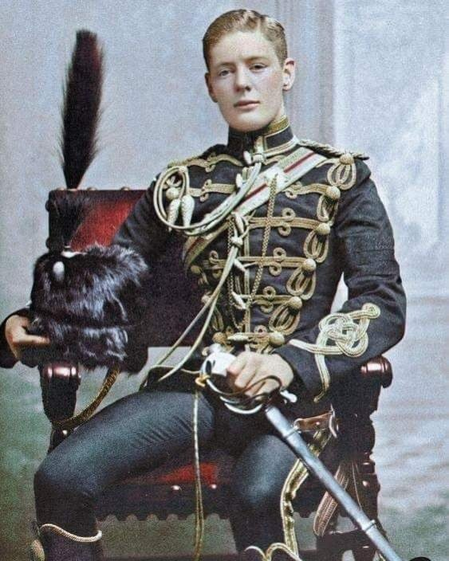
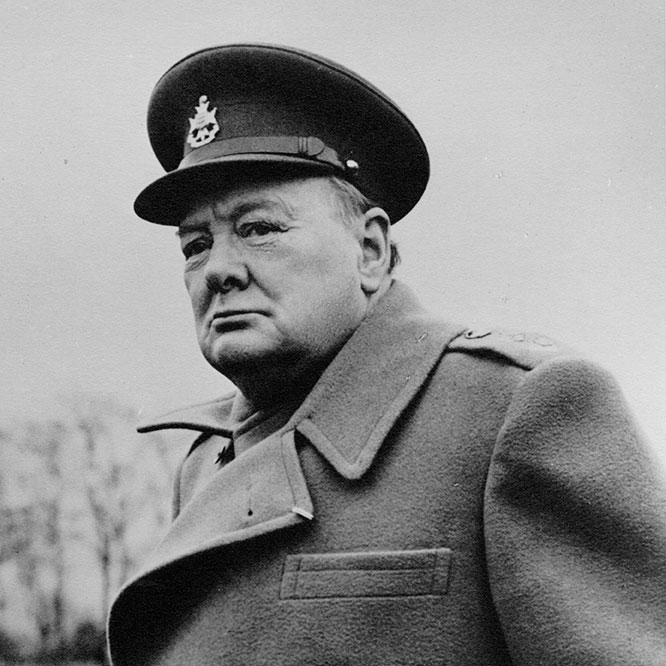
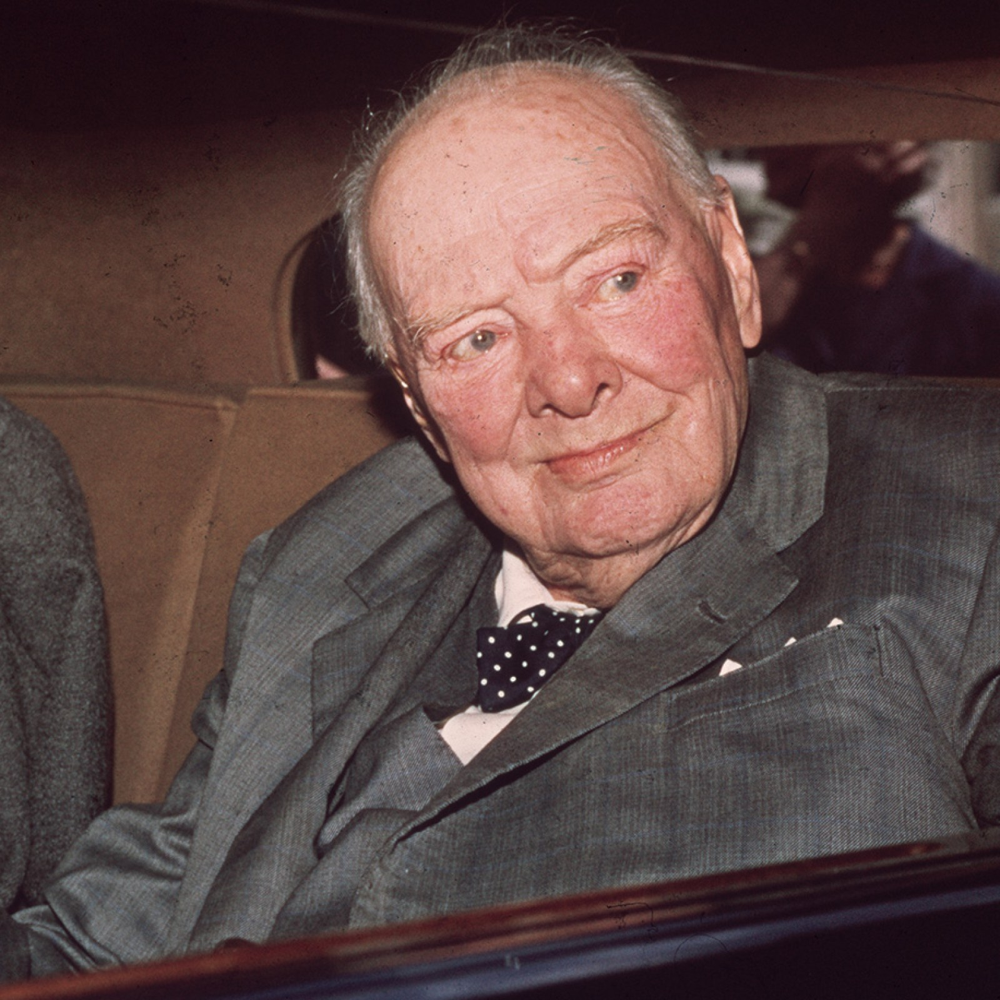

Winston Churchill was born on November 30, 1874, at Blenheim Palace in England.
He came from an aristocratic family, with his father being a prominent politician and his mother an
American socialite.
Churchill attended Harrow School and the Royal Military Academy Sandhurst, beginning a military career
with postings in India, Sudan, and South Africa.
These early experiences laid the groundwork for his future political career.

Sir Winston Churchill's adult life was marked by extraordinary leadership, resilience, and influence on
the world stage.
After a distinguished military career in his youth, Churchill entered politics, where he served as a
Member of Parliament, holding various ministerial positions.
He is most renowned for his role as Prime Minister of the United Kingdom during World War II, where his
steadfast leadership and oratory skills rallied the nation against Nazi Germany.
Beyond the war, Churchill continued to shape global politics, advocating for international cooperation
and playing a crucial role in shaping post-war Europe. His legacy as a statesman,
historian, and orator remains deeply influential in British and world history.

In his later life, Winston Churchill remained a prominent figure in British politics and international
affairs.
After losing the 1945 general election, he spent several years as Leader of the Opposition, advocating
for a strong stance against Soviet communism.
Re-elected as Prime Minister in 1951, he served until 1955, focusing on domestic reforms and maintaining
Britain's global influence. Following his retirement,
Churchill continued to write and speak publicly, earning the Nobel Prize in Literature in 1953 for his
historical writings. He passed away in 1965 at the age of 90,
leaving a legacy as one of the 20th century's most influential leaders.
